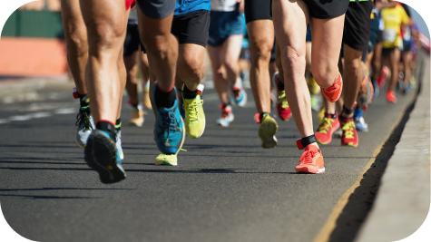

CORRIDA
A corrida é uma atividade física acessível e versátil que traz inúmeros benefícios para o corpo e a mente. Ao calçar os tênis e sair para correr, você está embarcando em uma jornada de superação pessoal e conquista de metas. A corrida fortalece os músculos, melhora a resistência cardiovascular, queima calorias e contribui para a perda de peso. Além disso, ela estimula a liberação de endorfinas, conhecidas como hormônios do bem-estar, trazendo uma sensação de felicidade e reduzindo o estresse. Seja em trilhas, parques ou nas ruas da cidade, a corrida oferece a liberdade de explorar o mundo ao seu redor enquanto cuida da sua saúde.
Um dos principais benefícios da musculação é o fortalecimento muscular. Ao realizar exercícios com pesos, o corpo é estimulado a desenvolver massa muscular, o que pode melhorar a postura, a estabilidade articular e a funcionalidade geral. Além disso, o aumento da massa muscular pode auxiliar na queima de gordura, uma vez que o metabolismo acelerado ajuda a manter o peso corporal equilibrado.
Um dos principais benefícios da musculação é o fortalecimento muscular. Ao realizar exercícios com pesos, o corpo é estimulado a desenvolver massa muscular, o que pode melhorar a postura, a estabilidade articular e a funcionalidade geral. Além disso, o aumento da massa muscular pode auxiliar na queima de gordura, uma vez que o metabolismo acelerado ajuda a manter o peso corporal equilibrado.